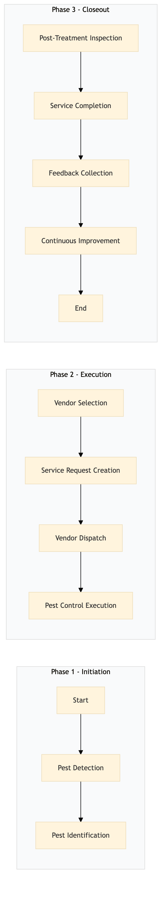

| Role | Steps |
|---|---|
| Executive Housekeeper | 1.1 1.2 3.1 |
| Procurement Manager | 2.1 2.3 |
| Front Desk Agent | 2.2 3.2 |
| Pest Control Technician | 2.4 |
| Guest Services Manager | 3.3 |
| Step | Name | Role | System | Input | Output | KPI | Dec? | Exc? | Pain Point / Risk |
|---|---|---|---|---|---|---|---|---|---|
| 1.1 | Pest Detection | Executive Housekeeper | Oracle OPERA Cloud | Inspection report | Pest detection log | < 30 min | Y | N | False positives in pest detection leading to unnecessary treatments. |
| 1.2 | Pest Identification | Executive Housekeeper | Oracle OPERA Cloud | Pest detection log | Pest identification report | < 15 min | N | Y | Misidentification of pests leading to ineffective treatment. |
| 2.1 | Vendor Selection | Procurement Manager | Birchstreet Procurement | Pest identification report | Selected vendor list | < 48 hours | Y | N | Inconsistent quality of pest control services from different vendors. |
| 2.2 | Service Request Creation | Front Desk Agent | Oracle OPERA Cloud | Selected vendor list | Service request ticket | < 5 min | N | Y | Delayed service requests affecting pest control timelines. |
| 2.3 | Vendor Dispatch | Procurement Manager | Birchstreet Procurement | Service request ticket | Dispatch confirmation | < 1 hour | N | Y | Vendor delays in dispatching pest control services. |
| 2.4 | Pest Control Execution | Pest Control Technician | Oracle OPERA Cloud | Dispatch confirmation | Treatment log | < 3 hours | N | Y | Incomplete or ineffective pest control treatments. |
| 3.1 | Post-Treatment Inspection | Executive Housekeeper | Oracle OPERA Cloud | Treatment log | Inspection report | < 2 hours | Y | N | Missed pests after treatment leading to re-treatment cycles. |
| 3.2 | Service Completion | Front Desk Agent | Oracle OPERA Cloud | Inspection report | Service completion ticket | < 10 min | N | Y | Incomplete service documentation affecting future compliance. |
| 3.3 | Feedback Collection | Guest Services Manager | Oracle OPERA Cloud | Service completion ticket | Guest feedback report | < 24 hours | N | Y | Low guest satisfaction due to pest control issues. |
| 3.4 | Continuous Improvement | Executive Housekeeper | Oracle OPERA Cloud | Guest feedback report | Improvement plan | < 1 week | Y | N | Lack of continuous improvement leading to recurring pest issues. |
The Pest Control Management process at a Marriott full-service hotel ensures the maintenance of a clean and hygienic environment by scheduling, executing, and monitoring pest control activities.